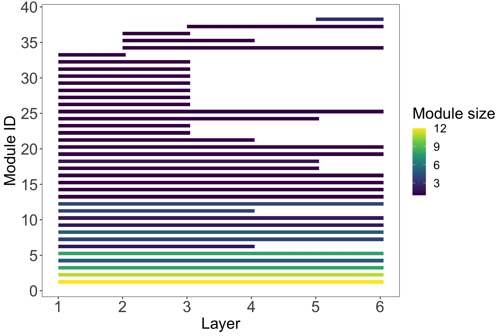
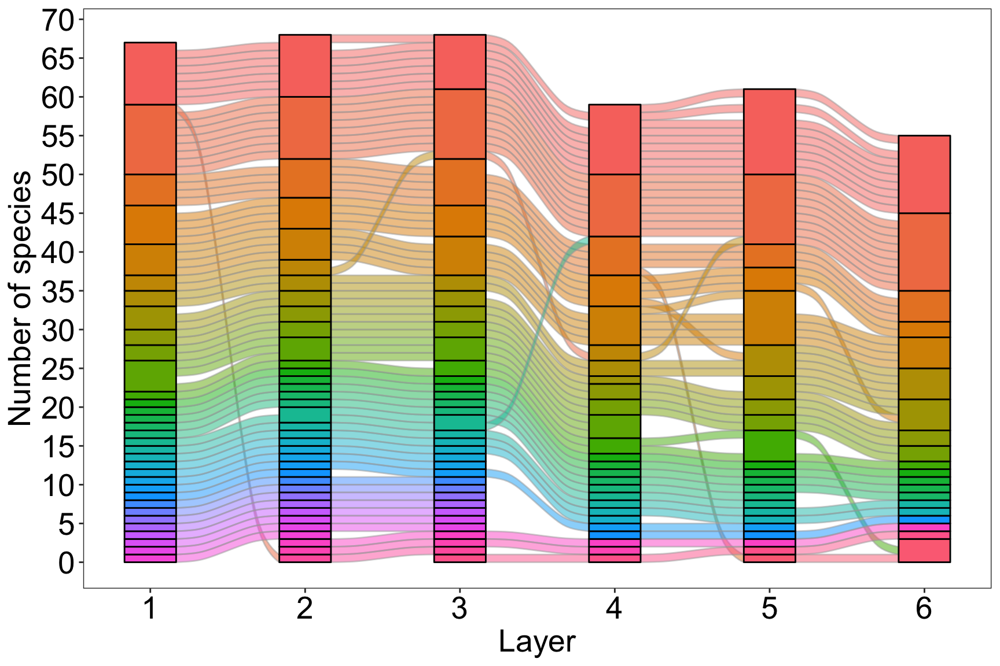

A temporal multilayer network. Each layer is a host-parasite bipartite network. Intralayer edges between a parasite species and a host species are the number of parasite individuals divided by the number of host individuals. Interlayer coupling edges connect each physical node to itself in the next layer (e.g., host A in layer 1 to host A in layer 2), and are calculated as the number of individuals in layer l+1 divided by the number of individuals in layer l. They therefore represent population dynamics. Interlayer edges only go one way (l–>l+1) because time flow one way. We represented the undirected edges within each layer as directed edges that go both ways (with the same weight) to be able to have a directed flow. This does not affect the calculation of L. This data set was taken from Pilosof S, Porter MA, Pascual M, Kéfi S. The multilayer nature of ecological networks. Nature Ecology & Evolution. 2017;1: 0101.
Data sets in infomapecology:
The data consists of several matrices representing the host-parasite bipartite network each year, an interlayer extended edge list defining the interlayer links between the same species in different years, and a table containing the attributes of the physical nodes (species).
# Get data
data(siberia1982_matrix)
data(siberia1983_matrix)
data(siberia1984_matrix)
data(siberia1985_matrix)
data(siberia1986_matrix)
data(siberia1987_matrix)
data(siberia_interlayer)
data(siberia_nodes)A general multilayer link-list. This multilayer format gives full control of the dynamics, and no other movements are encoded. When using this input format, it is expected that interlayer edges will be provided, otherwise there will be no inter-layer links in the final state network.
*Multilayer
#layer node layer node weight
1 4 1 5 0.1585
1 4 1 6 0.2143
1 4 1 7 0.8276
... some more links...
4 20 4 74 0.0019
4 23 4 10 24.6
4 24 4 5 0.1143
... some more links...
2 16 3 16 1.14285714285714
4 29 5 29 3.66666666666667
5 57 6 57 0.841212121212121
The description of functions create_multilayer_network
and run_infomap_multilayer in the emln and
infomapecology packages contains everything you need to
know. Plotting is done using two dedicated functions:
plot_multilayer_modules and
plot_multilayer_alluvial.
# Create a multilayer object
layer_attrib <- tibble(layer_id=1:6, layer_name=c('1982','1983','1984','1985','1986','1987'))
multilayer_siberia <- create_multilayer_network(list_of_layers = list(siberia1982_matrix,
siberia1983_matrix,
siberia1984_matrix,
siberia1985_matrix,
siberia1986_matrix,
siberia1987_matrix),
layer_attributes = layer_attrib,
interlayer_links = siberia_interlayer,
bipartite = T,
directed = F,physical_node_attributes = siberia_nodes )## [1] "Layer #1 processing."
## [1] "Input: a bipartite matrix"
## [1] "Some node have no interactions. They will appear in the node table but not in the edge list"
## [1] "Done."
## [1] "Layer #2 processing."
## [1] "Input: a bipartite matrix"
## [1] "Some node have no interactions. They will appear in the node table but not in the edge list"
## [1] "Done."
## [1] "Layer #3 processing."
## [1] "Input: a bipartite matrix"
## [1] "Some node have no interactions. They will appear in the node table but not in the edge list"
## [1] "Done."
## [1] "Layer #4 processing."
## [1] "Input: a bipartite matrix"
## [1] "Some node have no interactions. They will appear in the node table but not in the edge list"
## [1] "Done."
## [1] "Layer #5 processing."
## [1] "Input: a bipartite matrix"
## [1] "Some node have no interactions. They will appear in the node table but not in the edge list"
## [1] "Done."
## [1] "Layer #6 processing."
## [1] "Input: a bipartite matrix"
## [1] "Some node have no interactions. They will appear in the node table but not in the edge list"
## [1] "Done."
## [1] "Organizing state nodes"
## [1] "Creating extended link list with node IDs"
## [1] "Organizing state nodes"#Run infomap
multilayer_siberia_modules <- run_infomap_multilayer(M=multilayer_siberia, relax = F, flow_model = 'directed', silent = T, trials = 100, seed = 497294, temporal_network = T)## [1] "Using interlayer edge values to determine flow between layers."
## [1] "./Infomap infomap_multilayer.txt . --tree -2 -N 100 --seed 497294 -f directed --silent"
## [1] "No modules were assigned nodes that lacked flow: "
## # A tibble: 5 × 2
## node_id node_name
## <int> <chr>
## 1 22 Hirstionyssus_apodemi
## 2 27 Holoparasitus_gontscharovae
## 3 32 Laelaps_micromydis
## 4 58 Parasitus_berlesei
## 5 61 Parasitus_convexus
## [1] "Reorganizing modules..."
## [1] "Removing auxilary files..."
## [1] "Partitioned into 73 modules."#Module persistence
modules_persistence <- multilayer_siberia_modules$modules %>%
group_by(module) %>%
summarise(b=min(layer_id), d=max(layer_id), persistence=d-b+1) %>%
count(persistence) %>%
mutate(percent=(n/max(multilayer_siberia_modules$module$module))*100)
# 1. Modules' persistence
plot_multilayer_modules(multilayer_siberia_modules, type = 'rectangle', color_modules = T)+
scale_x_continuous(breaks=seq(0,6,1))+
scale_y_continuous(breaks=seq(0,70,5))+
scale_fill_viridis_c()+
theme_bw()+
theme(panel.grid.major = element_blank(),
panel.grid.minor = element_blank(),
axis.title = element_text(size=20),
axis.text = element_text(size = 20),
legend.text = element_text(size=15),
legend.title = element_text(size=20))
#2. Species flow through modules in time
plot_multilayer_alluvial(multilayer_siberia_modules, module_labels = F)+
scale_x_continuous(breaks=seq(0,6,1))+
scale_y_continuous(breaks=seq(0,70,5))+
labs(y='Number of species')+
theme_bw()+
theme(legend.position = "none",
panel.grid = element_blank(),
axis.text = element_text(color='black', size = 20),
axis.title = element_text(size=20))
Under the hood, the function run_infomap_multilayer
runs:
./Infomap infomap_multilayer.txt . -2 --seed 497294 -N 100 -i multilayer -f directed --silentExplanation of key arguments: * -i multilayer indicates
a multilayer input format, which is automatically recognized as a general
multilayer link-list. * -f directed indicates flow on a
directed network. The visitation rates of nodes is obtained with a
PageRank algorithm based on the direction and weight of edges. This
includes interlayer edges.
For multilayer network the output file has a _states
suffix, with the following format. Note the state_id column. For
example, node 6 in layer 5 has a state_id of 377 (last line). The
state_ids are created by Infomap but not used in our R code.
# path flow name state_id node_id layer_id
1:1 0.0350053 "7" 334 7 6
1:2 0.0294496 "7" 205 7 4
1:3 0.0291166 "7" 280 7 5
1:4 0.0283014 "7" 137 7 3
1:5 0.0124629 "7" 69 7 2
1:6 0.00734334 "7" 3 7 1
1:7 0.00180819 "33" 171 33 3
...
11:1 0.00929888 "52" 328 52 6
11:2 0.00861513 "52" 272 52 5
11:3 0.00694999 "52" 211 52 4
11:4 0.00564292 "52" 146 52 3
11:5 0.00256943 "52" 76 52 2
11:6 0.00101397 "52" 14 52 1
12:1 0.0083305 "16" 340 16 6
...This output is parsed by run_infomap_multilayer to
obtain a table in which each state node (combination of a physical node
in a layer) is assigned to a module. This can be obtained by:
multilayer_siberia_modules$modules %>% select(node_id, layer_id, node_name, type, module)## # A tibble: 308 × 5
## node_id layer_id node_name type module
## <int> <int> <chr> <chr> <int>
## 1 1 2 Amalaraeus_penicilliger paras 52
## 2 1 3 Amalaraeus_penicilliger paras 52
## 3 1 4 Amalaraeus_penicilliger paras 52
## 4 1 5 Amalaraeus_penicilliger paras 52
## 5 1 6 Amalaraeus_penicilliger paras 52
## 6 2 2 Amerosejus_corbicula paras 31
## 7 2 3 Amerosejus_corbicula paras 31
## 8 3 2 Amphipsylla_sibirica paras 26
## 9 3 3 Amphipsylla_sibirica paras 26
## 10 3 4 Amphipsylla_sibirica paras 26
## # … with 298 more rows